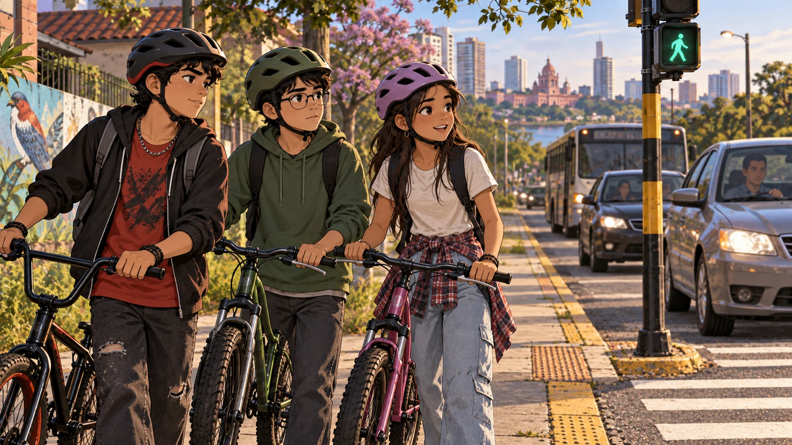
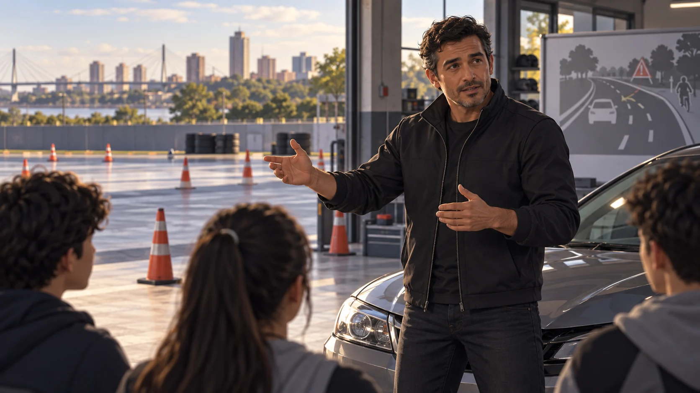

Sin currícula sistemática
La educación vial suele quedar en una actividad puntual, sin continuidad durante la trayectoria escolar.
Proyecto impulsado a través de Mi Paraguay
“Que sepan los chicos”, en jopará
Educación vial gamificada para acompañar a estudiantes paraguayos desde sus primeros pasos como peatones hasta la edad de obtener su licencia de conducir.
Propuesta preliminar para el Ministerio de Educación y Ciencias · Septiembre de 2026

El problema
La educación vial suele quedar en una actividad puntual, sin continuidad durante la trayectoria escolar.
Cruzar mal, no usar casco o ignorar el semáforo son conductas de riesgo que pueden comenzar en la niñez.
Quienes hoy tienen entre 7 y 17 años tramitarán su primera licencia en los próximos años.
La propuesta
Cada edad aprende con historias y referentes propios: Zorri y Tallerito para la niñez, un trío de amigos para la adolescencia y una voz experta para quienes se acercan a la conducción. Cada estudiante progresa y también aporta al desempeño de su colegio.
Contenidos diferenciados para 7 a 12, 13 a 15 y 16 a 18 años, alineados con la edad legal para conducir.
Puntos, insignias y un torneo intercolegial anual convierten el conocimiento en práctica sostenida.
Los primeros episodios, con Zorri y Tallerito, se compartirán con los colegios adheridos. El proyecto solicitará al MEC su consideración como contenido de interés educativo.
Los protagonistas
La identidad visual y el tono de las historias crecen con los estudiantes. Estos conceptos de los ciclos 2 y 3 están en desarrollo.
Los amigos de los niños enseñan seguridad vial en los primeros programas del canal de YouTube. Sus episodios se compartirán con los colegios adheridos.

Uno es audaz y cuestiona las reglas; otro observa y prefiere actuar con cuidado. La tercera persona, abierta y sociable, los une. Sus aventuras muestran cómo cada decisión tiene consecuencias.

Un personaje animado presenta contenidos más serios sobre conducción y prevención. Un ex piloto profesional paraguayo podría inspirar este papel, sujeto a definición y acuerdo.
Detrás de cada capítulo
Los tres ciclos requieren personajes, historias y recursos visuales adecuados a su edad. Cada episodio combina trabajo creativo con revisión pedagógica y técnica antes de llegar a las aulas.
Definición de personajes, escenarios, estilo de animación y objetivos educativos de cada ciclo.
Investigación del tema, historia, diálogos y revisión de los mensajes de seguridad vial.
Propondremos presentar cada guion al Ministerio para observaciones y aprobación antes de producir y editar el capítulo.
Storyboard, voces, ilustración, animación, sonido, montaje y subtítulos.
Control de calidad, entrega a los colegios adheridos y mejoras a partir de la experiencia en aula.
El procedimiento de revisión y aprobación de guiones se definirá con el MEC. Los bocetos de personajes de los ciclos 2 y 3 siguen en desarrollo.
Currícula
Ciclo 1
Cruces seguros, semáforos, bicicleta, patines y monopatín. Uso de casco, elementos reflectantes y primeros auxilios básicos.
Ciclo 2
Transporte público y escolar, monopatines eléctricos y otros medios de movilidad. Las aventuras de tres adolescentes conectan cada decisión con sus consecuencias. RCP básico y atención inicial de heridas.
Ciclo 3
Reglas nacionales e internacionales, mantenimiento vehicular y simulacro del examen municipal, con un tono más serio y un guía experimentado.
Contenido transversal
El contenido avanza desde cómo actuar ante una caída y pedir ayuda hasta RCP básico y un protocolo de actuación ante un siniestro.
Contenido sujeto a validación con la Cruz Roja Paraguaya u organismo equivalente.El Ciclo 3 incorpora revisión de refrigerante y aceite, calibrado de neumáticos y cuidado de baterías en vehículos híbridos y eléctricos.
En el Ciclo 1, Tallerito introduce el cuidado de los rodados. El Ciclo 3 profundiza el mantenimiento con su propio guía.Motor del programa
Los puntos reconocen el aprendizaje de cada estudiante y se acumulan para representar a su colegio.
Los colegios con mejor desempeño clasifican a etapas regionales y a una final nacional anual.
Marco legal
Ley N.º 5016/2014. La Ley Nacional de Tránsito y Seguridad Vial establece el marco nacional de tránsito y licencias de conducir.
Licencias y municipios. La edad mínima general para licencias Particular y Motociclista es 18 años. Cada municipalidad reglamenta su proceso.
Certificado del Ciclo 3. El proyecto propone que su finalización pueda reconocerse como antecedente o mérito ante las municipalidades. Este punto requiere acuerdo institucional.
En marcha
Presentación institucional, reuniones con el MEC y colegios piloto, y cierre del auspicio ancla.
Implementación del Ciclo 1 en colegios piloto y publicación de los primeros episodios del canal.
Desarrollo de los ciclos 2 y 3, primer torneo intercolegial y expansión progresiva.
Modelo
El programa se sostiene con auspicio privado y espacios de marca. El MEC recibe material listo para validar y utilizar, sin recurrir al presupuesto público.
Sin costo para el MEC
Sin costo para los colegios piloto
Financiado mediante auspicios privados
Propuesta institucional
Aval institucional para presentar el programa como material de apoyo en educación vial y ciudadanía.
Autorización para un piloto en dos o tres colegios públicos y privados durante 2026 y 2027.
Mesa de trabajo curricular para validar los contenidos correspondientes a cada ciclo.
Revisión de guiones para acordar cómo presentar y aprobar cada capítulo antes de su producción y edición.
Criterio de reconocimiento para que el certificado del Ciclo 3 pueda considerarse antecedente o mérito ante las municipalidades.
Seguinos en Instagram
Noticias, contenidos educativos y avances del programa en @ikuaalomita.
Abrir Instagram
Construyamos juntos
Ikuaa Lo Mitã propone comenzar antes de la primera licencia, cuando todavía estamos a tiempo de convertir información en hábitos.